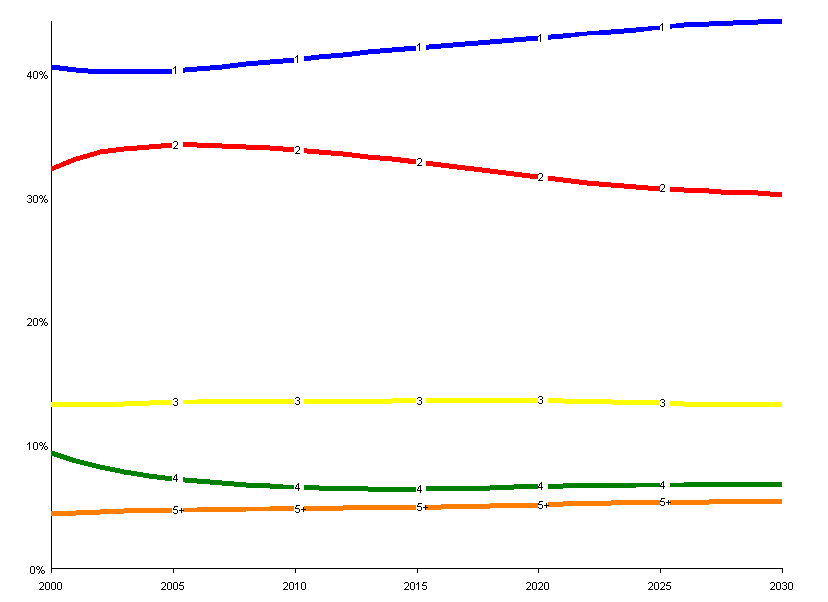
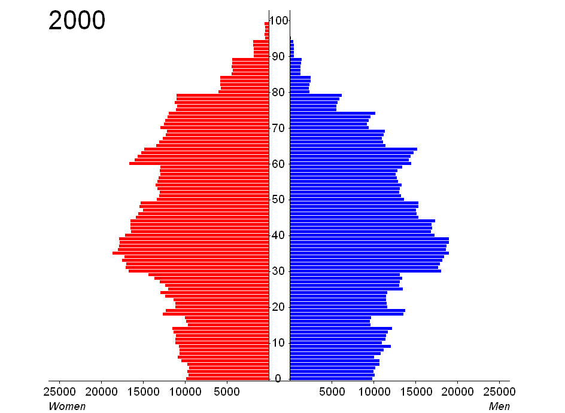
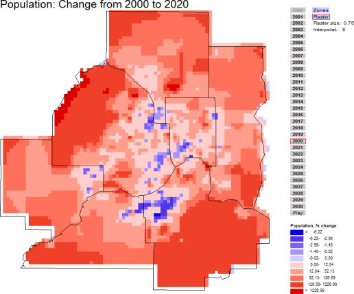

SILO is a land-use model that is designed as a discrete choice microsimulation model. Discrete choice means that decisions (such as a decision of a household to move to a new dwelling) are modeled explicitly based on the benefit or utility at the current dwelling location and expected utilities at alternative dwelling locations.
Being a microsimulation model, every household and person is simulated individually. SILO models household relocation, non-spatial demographic changes (such as birth, aging, marriage or having children), developers' decisions to build new residential buildings and change of dwellings over time (including renovation, deterioration and demolition). It is calibrated to closely match observed land use changes from 2000 to 2010 (so-called backcasting), to reasonable model population changes in the future to the year 2040.
SILO is built as a middle-weight tool. It is fully integrated with a travel demand model, and therefore, more complex than sketch-planning tools (such as CommunityViz or UPlan). On the other hand, it is built to function with less rigorous data collection and estimation requirements than traditional large-scale land-use models (such as PECAS or UrbanSim), making SILO simpler to implement.
SILO is an open-source software and was initially developed with funding by Parsons Brinckerhoff. The prototype application was implemented for the Metropolitan Area of Minneapolis/St. Paul, Minnesota. Currently, NCSG implements an improved version for the State of Maryland. SILO provides a GUI (Graphical User Interface) to facilitate model applications. A visualization tool allows easy analysis of model results.

A visualizer is part of the SILO package to quickly analyze model results.